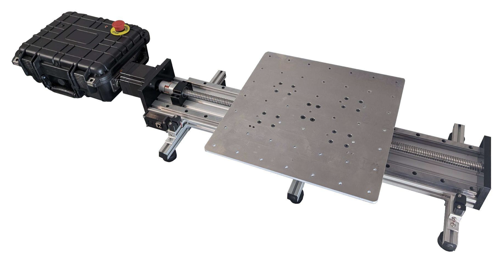

Research
Research initiatives and the NTNU EERI Student Chapter
NTNU EERI Student Chapter
NTNU Seismic is proud to be part of the future NTNU EERI (Earthquake Engineering Research Institute) Student Chapter.
This affiliation connects us with a global network of professionals and researchers in earthquake engineering, providing opportunities for collaboration and knowledge exchange.
Shake Table Facility
We are in the process of establishing a shake table facility. This equipment is crucial for testing our competition models under simulated earthquake conditions.
Beyond the competition, the shake table may be available for research use by students, faculty and industry partners, supporting experimental research in structural dynamics and seismic engineering. If your company, conference or research initiative is interested in using a Shake-Table in Norway, Denmark or Sweden, please contact ringrosedaniel@gmail.com.